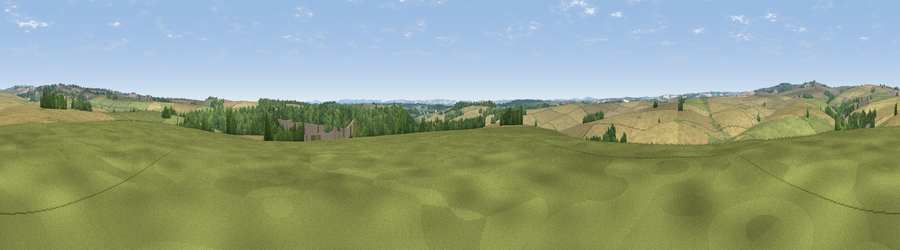

Viewpoint near Dewlish
#24750 in England · top 52% of its area beats it · near DewlishWhere it is
The exact computed spot (SY 76775 98525). Click the marker for map links.
The view, rendered

A 360° render of this exact spot computed from the terrain model, tree cover and land cover — summer colours, afternoon light, calibrated against photographs of famous viewpoints. Real trees, hedges and buildings will differ in detail.
The panorama
Grey silhouette: terrain skyline in each direction (720 bearings, Earth curvature and refraction included). Dashed green: skyline with trees (+15 m) and buildings (+8 m) as obstacles. Blue strip: how far the ground is visible on each bearing.
Where the view opens
Wedge length = distance to the farthest visible ground on that bearing (vegetation-aware). Rings at 10, 25 and 50 km.
What fills the view
53% cropland · 29% grassland · 17% woodland
Angular shares of the visible panorama (visual magnitude), not map area. Landscape diversity 0.44 (0–1 Shannon).
Key numbers
More beautiful places nearby
The staircase of upgrades: each row has a higher view potential than everything closer. Driving times are estimates from straight-line distance, calibrated against real road routing — check an actual route before setting out.
| Place | Direction | Drive | Score |
|---|---|---|---|
| Viewpoint near Tolpuddle | SSE · 3 km | ~7 min | 46.9 |
| Henning Hill | NNW · 3 km | ~8 min | 63.6 |
| Viewpoint near Melcombe Bingham | NNW · 5 km | ~11 min | 66.8 |
| Viewpoint near Melcombe Bingham | NNW · 5 km | ~11 min | 70.5 |
| Viewpoint near Woolland | N · 7 km | ~15 min | 74.5 |
| East Hill | SSW · 15 km | ~27 min | 79.6 |
| Viewpoint near Sutton Poyntz | SSW · 16 km | ~28 min | 79.9 |
| Viewpoint near Owermoigne | S · 16 km | ~29 min | 81.0 |
50.78583, -2.33083 · source: screening · position refined by local search. Computed location — check access rights before visiting.